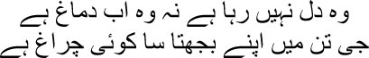

41

The old heart is gone, the mind too
There’s life in the body, like a lamp burning down
 es, Manto bhai, after this came a period of staying awake in a fog of forgetfulness. The mind no longer spoke, no waves crashed on the shores of the heart. Having taken over Shahjahanabad, the British gifted us a dead city. Where a cold wind blew all the time, where the fallen leaves could be heard rustling, where the streets were blackened with the congealed blood of dead people. Every day was cursed, I knew there was no end to this; it had all been destroyed.
es, Manto bhai, after this came a period of staying awake in a fog of forgetfulness. The mind no longer spoke, no waves crashed on the shores of the heart. Having taken over Shahjahanabad, the British gifted us a dead city. Where a cold wind blew all the time, where the fallen leaves could be heard rustling, where the streets were blackened with the congealed blood of dead people. Every day was cursed, I knew there was no end to this; it had all been destroyed.
One neighbourhood after another emptied out. They had slaughtered the Muslims; those who had managed to survive had fled. There was no light in their homes at night, no smoke rose from their ovens during the day. There was no one to have a conversation with. I could not survive without talking to people. Besides my friends, I had warm relationships with my neighbours too. I suffocated without laughter and jokes and gossip. How was I to tolerate such silence? Eventually I began to converse with my own pen, and my own shadow became my friend. I didn’t even have the means to correspond with my friends. The postal system had collapsed completely. Newspapers were not delivered. French wines were not available either. I could not sleep without a drink. A friend sent rum from time to time, on which I managed to survive.
My pension had been stopped, but I had to support several people. We began to sell Umrao Begum’s jewellery. Even our beds and clothes had to be sold. I laughed at myself. Others eat bread, Mirza, and you eat garments. But what will you do when you’ve eaten through all your clothes? Suck my thumbs. Even if I get the rest of my pension, the mirror won’t lose its stains. And if I don’t, the mirror itself will be shattered. I’m not talking in riddles, my brothers. This heart is exactly like a mirror. Every day I’d tell myself that it was time to flee from Delhi, that it wasn’t possible to survive here anymore. Even water wasn’t available; we had to take measured sips. Can you imagine, Manto bhai, for two days in a row we had no water at home.
If we survived in spite of this, it was because of a helping hand from three or four people. The lord gave me this one invaluable asset—human beings. In times of distress, someone or the other always stood by me. Hira Singh and Shivjiram Brahman were like my sons, my pupils—they helped me in many different ways. Shivjiram’s son Balmukund helped me too. And Hargopal Tafta sent money from Hyderabad whenever he could.
I get confused when I think of all those days. I feel as though I’m trapped inside a labyrinth, with blood clotting in its lanes, the severed heads of familiar and unfamiliar people scattered on the ground, all of them staring at me unblinkingly, as though they want to say something, I see their lips trembling with hatred and humiliation. Surely they didn’t deserve to end up as unclaimed corpses, Manto bhai.
No one who had a relationship with the emperor was spared death. To them, all Muslims were traitors. I was on the list of suspects too. One day, Colonel Burne sent a team of white soldiers to arrest me. Maharaja Narendra Singh of Patiala had been on the side of the British from the beginning. Well-known people like Mehmood Khan, Murtaza Khan, and Ghulamullah Khan lived in the same lane as I did. All of them belonged to the royal court of Patiala. With the consent of the British, Maharaja Narendra Singh installed his own soldiers in our lane. So we could at least venture out to arrange for food and water. We were not permitted to go beyond Chandni Chowk on pain of death. But the British soldiers jumped over the wall into our lane and laid siege to my house. Along with me, Bakir, Husain, Kallu and one or two other neighbours were marched off to Colonel Burne. He was in Qutubuddin’s haveli near the square. They really were naïve, like newborn babies. The first question I was asked in broken Urdu was, ‘Are you a Muslim?’
Why should I give up an opportunity for a joke? ‘Half-Muslim, huzoor,’ I answered.
— Meaning?
— I drink, but pork is a profanity.
The colonel burst into laughter. —I see you have a sense of humour.
— Sixty years of humour, huzoor. I extended the letter from London towards him as I spoke. The letter of acknowledgment for the qaseeda that I had sent the Queen Empress Victoria.
— What’s this?
— Take a look, huzoor.
After a quick glance Colonel Burne tossed the letter back at me. —I don’t need to read such useless things.
— Yes sir.
— Why didn’t you meet us after we restored peace in Dilli?
— I wanted to, huzoor. But they would have shot me if I ventured out.
— What else are they supposed to do with traitors?
— That is true, huzoor.
— Then why didn’t you come?
— Huzoor …
— I would like to know why you didn’t come.
— I am a Mirza, sahib.
— Meaning?
— I do not go anywhere except in a palanquin. There are no bearers in the city. How could I have come?
— So you’re a nobleman who cannot travel except in a palanquin! Colonel Burne screamed. ‘Get out … I’m letting you go because the documents at the fort did not have your name … get out …’
The propensity to insult people was in their blood. The more they could humiliate people, the drunker they got on power. You think I couldn’t have pissed on the colonel’s face? But we had our backs to the wall, and were left with no option but to escape from Shahjahanabad. All these insults and torture, even death, simply for being Muslim? I was a suspect only because I was a Muslim? Who gave them the science that they brag so much about, Manto bhai? None other than Muslims. Can history be erased so easily? But it can, for I saw for myself how Shahjahanabad was erased.
Do you know what you must do before making someone disappear? Brand him a criminal. It’s very easy after that. A farcical trial and the death sentence. In the case of Emperor Bahadur Shah Zafar, they ran the farce for twenty-one days before exiling him to Rangoon. Now listen to what they did to the nawabs of Jhajjhar, Bahadurgarh, Vallabhgarh, Loharu, Farrukhgarh, Dujana, and Pataudi, who owed allegiance to the emperor. Except for Dujana and Pataudi, the other nawabs were brought to the fort and imprisoned within a few days of the fall of Shahjahanabad. The nawabs of Jhajjhar, Vallabhgarh, and Farrukhgarh were hanged from trees near Chandni Chowk.
Now the armed British soldier
Is an independent tyrant
People are frozen with fear
The roads empty
The joyless home is a prison today
The square red with the blood of the vanquished
The city thirsts for Muslim blood
Every speck of dust is discontent
All I do is sit and count the number of dead and missing. Some of them are my friends and relatives; others, people I know. My friend Fazl-e-Haq was exiled for life. Shaifta was imprisoned for seven years. Others were either killed, or they managed to escape. Only their names remained in my life—Muzaffaruddaulah, Mir Nasiruddin, Mirza Asur Beg, Ahmed Mirza, Hakim Raziuddin Khan, Mustafa Khan, Qazi Faizullah, Husain Mirza, Mir Mehdi, Mir Sarfraz Husain, Meeran … From my devil’s chamber, I gazed at the stairs. There’s Mir Mehdi. Isn’t that Yusuf Mirza? There’s Meeran too. I can see Yusuf Ali Khan as well. Ya Allah! Would I have to bear the weight of the death of so many of my friends? There would be no one left to grieve for me when I died, Manto bhai.
The kingdom of those who invoked the law at every step turned lawless. Only, you—the people of Hindustan—would not be allowed to say that they had laid the law in its grave. They would tell you the law didn’t apply to them, and you would have to accept it. Let me tell you of an incident. Hafiz Mammu was a close associate of ours. When the accusation of conspiring against the British didn’t stick on him, his confiscated property had to be returned. The Commissioner sent for Mammu.
— Who is Hafiz Muhammad Khan?
— I am, huzoor.
— Who is Hafiz Mammu?
— I am, sir.
— What do you mean?
— My name is Hafiz Muhammad Khan. But everyone calls me Hafiz Mammu.
— Why?
— Their wish, huzoor.
— How do I know that the two of them are the same person?
— I’m telling you they are, huzoor.
— Then I’m telling you that you won’t get anything back.
— But why, huzoor?
— You must first prove who you are.
Hafiz Mammu had to return home empty-handed. This was the rule of law, after all. I was told that an office had been opened in Lahore to pay compensation. Those whose property had been looted by mutinous sepoys would receive ten percent compensation. If you’d been robbed of a thousand rupees, you would get a hundred. But there would be no compensation for the things plundered by British soldiers. What could be more convenient? Hindustan was their own property—why should they offer compensation for plundering it?
I didn’t feel like talking to anyone at all, Manto bhai. Bakir and Husain would appear sometimes and hug me. We want this, we want that. I had no money. But I couldn’t tell them that. Annoyed, I sent Kallu to the mahalsarai one day. In case Umrao Begum had any jewellery to sell.
Kallu did not return, and Umrao came to my room a little later. She stood with her head bowed.
— Why are you here, Begum?
— I have nothing more to sell.
— That swine Kallu could have told me himself. Where has he gone?
— He’s not to be blamed, Mirza sahib. I had something to tell you.
— Sit down. How can we talk while you’re standing?
— Pardon me, Mirza sahib.
— What’s the matter, Begum?
— I’m an imbecile. I didn’t realize …
— What is it, tell me. Did you steal something to eat? I laughed. —But then what do we have for you to steal anyway? Nothing but fresh air.
— Mirza sahib … She began to weep without finishing what she had to say. Where did these women get such copious tears?
— Don’t cry, Begum. The British will shoot you if they see. They want to turn our country into a desert, and here you are hiding all these tears. Now tell me what folly you’ve committed. You cannot be a bigger fool than I am.
— When the sepoys came, I left a box full of jewellery in Kale sahib’s house. He was the emperor’s teacher, surely the sepoys would not rob him.
— Hmm. All gone, isn’t that so?
The sepoys did not plunder Kale sahib’s house, Manto bhai, but the British soldiers were not going to spare the emperor’s teacher. Thus were Umrao’s last jewels looted. She wept as she told me this. Grasping her hand, I said, ‘You have adhered to the Din all this time. Don’t you realize the significance of the fact that the lord has now turned you into a beggar? The entire world is yours now.’
Umrao looked at me with glazed eyes.
— Celebrate, Begum, celebrate. The more your life loses its embellishments, the wider will the doors to happiness open for you.
— What will we live on, Mirza sahib?
— Shit. We will live on our own shit. The bastards can’t touch it.
— You have no idea what you’re saying, Mirza sahib.
— I’m right, Begum. They have come to Hindustan to get rid of us from this world.
Many of my ghazals were stored at the fort and in the Nawab of Loharu Ziauddin Khan’s library. Nawab Ziauddin would keep copies of whatever I wrote. He had nearly nine hundred pages of my prose and over two thousand of my verses. Those volumes had to be seen to be believed. Bound in Morocco leather, with special motifs on the cover in gold and silver thread. The emperor’s son, my pupil Mirza Fakhruddin, also had a collection of my ghazals in his library. I had never managed to arrange my own work systematically. All these years had passed chasing money for a livelihood and the dirty tricks necessitated by this. When the foreigners began to plunder our city, they didn’t spare the libraries. Numerous wonderful books were lost from this world. One day I heard a beggar on the road singing my ghazal. ‘Where did you learn this ghazal, mian?’ I asked him.
— On the road, huzoor.
— Do you have the paper it was written on?
Taking a tattered piece of paper from the pocket of his robe, he handed it to me. Yes, it was my ghazal. A page from one of the handwritten volumes in the library at the fort. I couldn’t hold back my tears, my brothers.
— What’s the matter, huzoor?
— Will you give me this piece of paper?
— Of course. What will I do with it?
— How will you sing now?
The beggar smiled. ‘I’ve copied it into the book of my heart, huzoor.’
As each day passed, the pages in the book of my heart were torn off one by one, fluttering away in the wind. There wasn’t a person I could bare my heart to. You can chat pleasantly with lots of people, laugh and joke with them too, but we all want someone whose tastes and sensibilities match our own. I longed for the company of at least one or two people with whom I could discuss poetry and imagination. Without them, even the finest garden decays. Dilli was now home only to soldiers, the British, and Punjabis and Hindus. Where were the people who shared my culture? No Zauq, no Momin Khan; where had Nizamuddin Maamun gone? Among the poets, only Arzuda and I were alive. Arzuda had fallen completely silent, and I was bewildered. No one wrote ghazals anymore, or talked of poetry. There come certain times of misfortune in the world, Manto bhai, when poetry dies. I seemed to be keeping a vigil by the grave of the ghazal, counting the hours. I could think of nothing but the time when death would come to take me beyond this worldly life.
Entire nights would pass in wakefulness. One day I saw a shadowy figure standing in my cell. Who was he? How had he got into my room? My throat ran dry at the sight of this tall man. ‘Who are you?’ I asked. ‘Where are you from?’
— I am Jalaluddin Rumi, huzoor.
— Maula Rumi! I threw myself at his feet. —Is my Judgement Day here, then?
— No, huzoor.
— Why do you address me as huzoor? There can be no greater sin on my part, Maula.
— Each of us is a huzoor, Mirza. Huzoor has said that the only happy existence is that of the grass. Seasons will come and go, leaves will fall and sprout again, but only the grass will survive on every field. Only the grass knows how to spread from the centre to the sides.
— What can I do for you, Maula, tell me.
Maula sat down, facing me, and put his hand on my shoulder.
— I came to tell you a story, Mirza.
— I have been reborn today, Maula. How many people have the fortune of listening to a story from you?
— I have been reborn too, huzoor. The lord has given me the opportunity to tell a story to the finest poet of Hindustan.
— I am insignificant in comparison to you.
— We are all stars scattered about the sky. No one except the lord knows how far away each one of us is. Some of us are dead, some alive. But still our dialogue continues, by the grace of God. Prophet Muhammad was sitting beneath a date palm tree one evening. He was surrounded by his disciples and nearby villagers. Pink and blue were at play in the sky as the sun set. Suddenly Zawhl stood up, shouting, ‘Muhammad, there’s never been anyone as ugly and filthy as your ancestor Hashim. Even his children have given birth to a succession of hideous offspring.’
Haider, Hazrat Muhammad’s most devoted disciple, unsheathed his sword at once. Calmly, Muhammad said, ‘You are right, Zawhl.’ Haider was deflated. He had been ready to behead Zawhl.
A little later, Abu Bakr knelt before Muhammad, saying, ‘Pardon Zawhl, O Prophet. There has not been another man more courageous or beautiful than your ancestor Hashim. You are the same.’
Smiling at Abu Bakr, Muhammad said, ‘You are right, Abu Bakr.’
There was a long silence. Suddenly an agitated Haider said, ‘The two of them are saying two different things, prophet. Both of them are right, you say. How is this possible?’
Muhammad smiled at Haider. —You are right too, Haider.
— I am right too?
— Yes. I am only a mirror, Haider. The lord has long been polishing me. Everyone sees himself in my mirror. If you look at the world through a blue-tinted glass, the world appears blue; if you see it through a red glass, it’s nothing but red. What people see is their own reflection.
— Then there is no such thing as truth in the world?
— You seek truth?
— I do.
— Then free yourself of all excitement and emotions, Haider. Keep polishing the mirror within yourself till all the colours are worked off and it becomes completely transparent. Only then will you see him, Haider.
— See whom, Maula? I clung to Jalaluddin Rumi’s feet.
— Let go of my feet, Mirza. You are being extinguished … you are merging into the depths of creation … there is no greater joy or truth. I pray that you die like a cat.
— Why?
— Cats can sense their hour of death and isolate themselves. They do not bother anyone, do not seek anyone’s pity. They face death alone. Solitude is the only truth, Mirza. Why do you fret? Everything will be swallowed by the black hole one day. You have been born in this world, you will leave it … such an effortless voyage, like a feather … this joy alone shall be your companion in solitude.